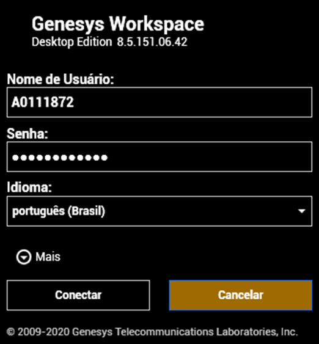
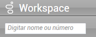
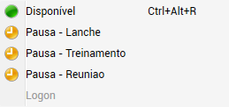

Acionar outras áreas e ser acionado para tratativas diferenciadas.
Deve se logar no início do turno.
Este procedimento deverá ser realizado sempre que houver a necessidade de contato imediato ou se esse for o único meio.
Acesso ao Workspace.
Para utilizar a nova URA o colaborador deverá realizar o download do novo software da WDE e instalar em seu respectivo computador:
Download: Clique aqui para realizar o Download
Deve acessar a ferramenta Workspace com login e senha de rede.
Ao acessar você terá as opções para efetuar ligações na aba:
Algumas ações nessa aba:
OBS: Geralmente recebemos ligações da regional e técnicos de campo para avaliar servidor cache
Também temos a opção de pausa:
Para que não seja interrompido, você poderá agendar uma dessas opções: